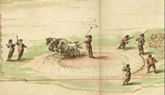

| Catasto per la contribuzione
alla manutenzione delle strade consolari.
Le ca. 400 mappe acquerellate furono raccolte dalla Presidenza
delle strade nel 1660-1661, al fine di ripartire equamente le
contribuzioni tra i proprietari delle tenute adiacenti; molte
sono copie di originali più antichi.
Erano conservate rilegate in volumi suddivisi per strada, precedute
da piante generali che delineano lo sviluppo delle singole strade
consolari a partire dalle porte cittadine.
Molte di esse sono ricche di particolari sugli edifici situati
lungo il percorso della strada, nelle tenute e sulla vita economica
della Campagna romana: il valore artistico della rappresentazione
pittorica e le informazioni relative alla storia del territorio
le rendono una delle serie più preziose dell'Archivio di Stato.
Schedatura: Daniela Sinisi e Orietta Verdi
Revisione e completamento: Orietta Verdi
Progetto della base di dati: Paolo Buonora
dati: Anna Casalvieri
Immissione ed elaborazione dati: Fabio Simonelli, Vincenzo De
Meo
Acquisizione immagini: Enrica Serinaldi, Nicoletta Valente, Luciana
Devoti, Laura Primangeli
Coordinamento: Vincenzo De Meo
Sviluppo applicativo: Stefano Tonazzi
Progettazione e assistenza sistemistica: Leonardo Valcamonici
(CASPUR)
|
|

Pianta 440/32: particolare della trebbiatura
|